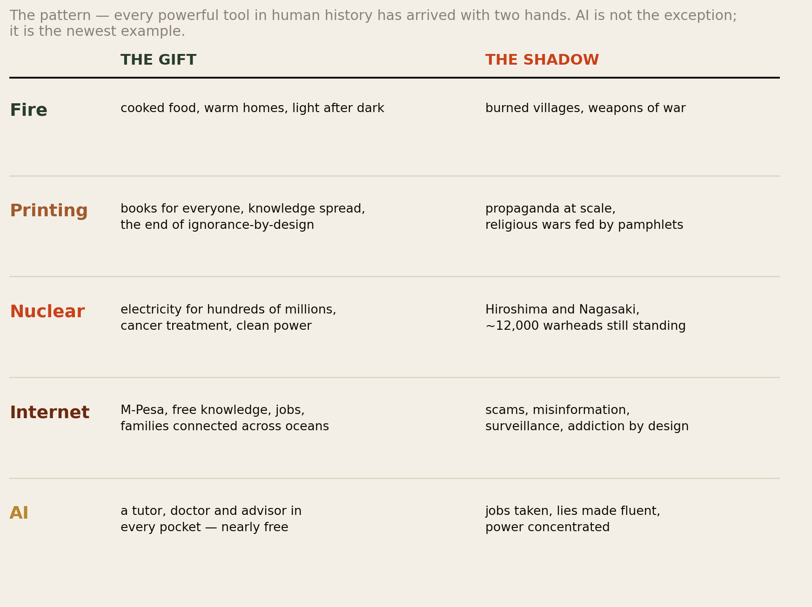
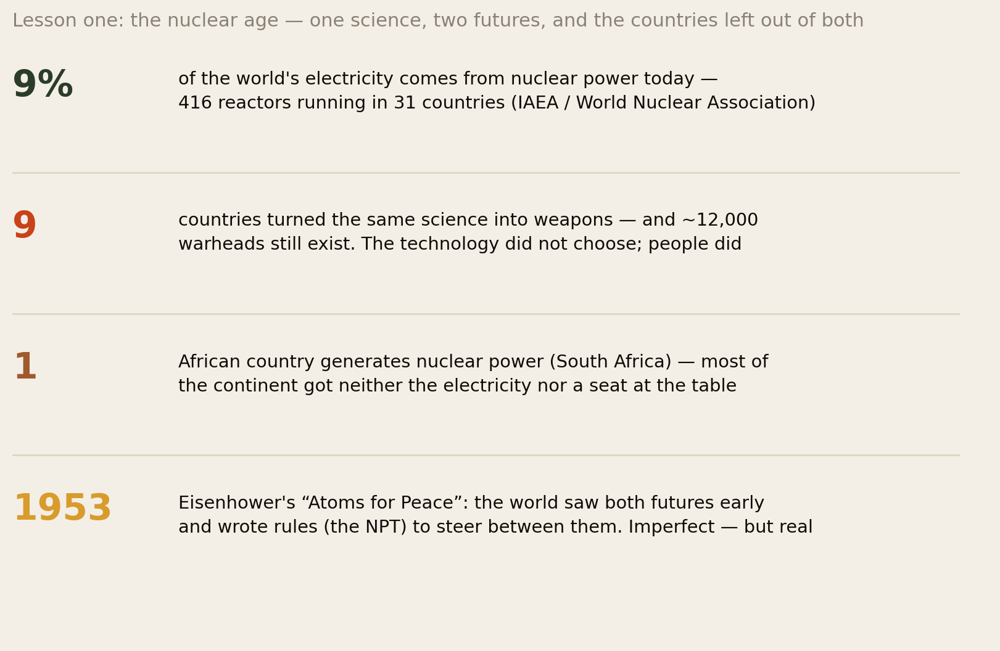
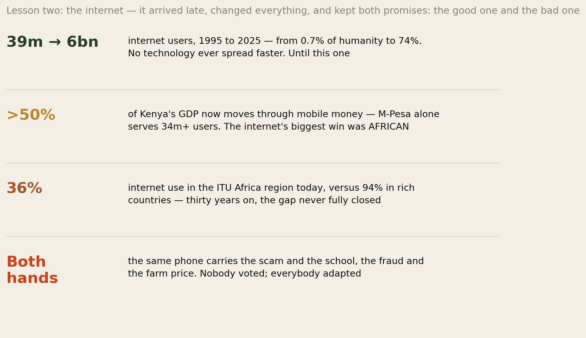
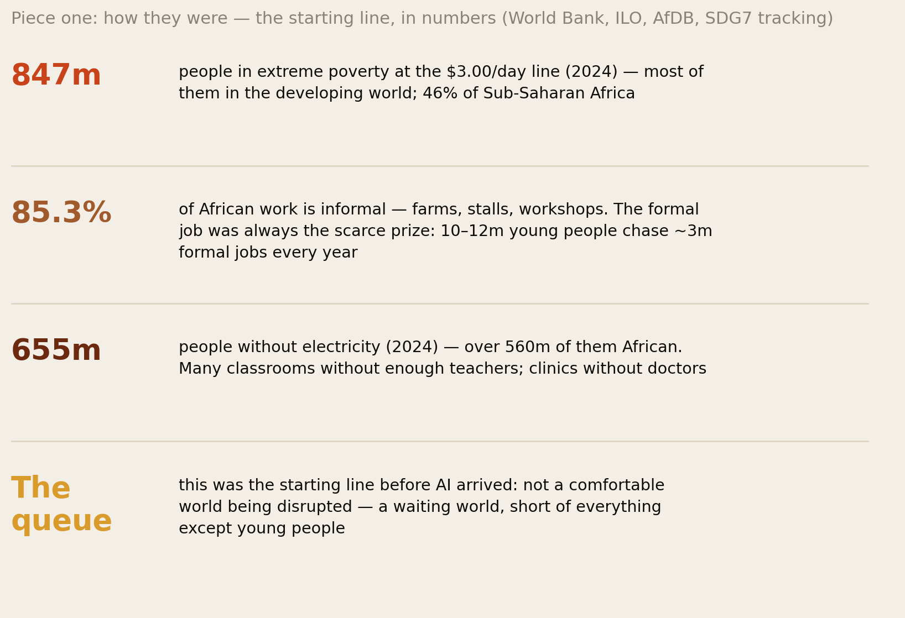
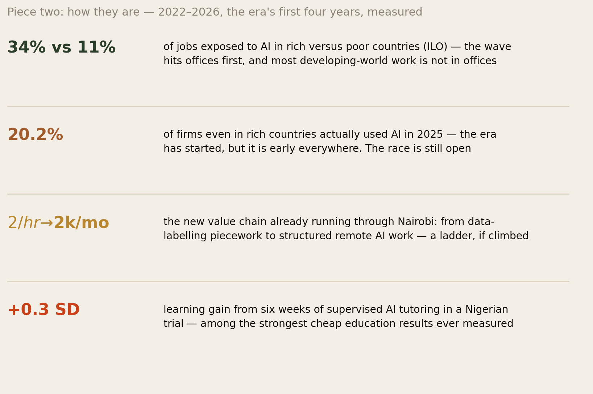
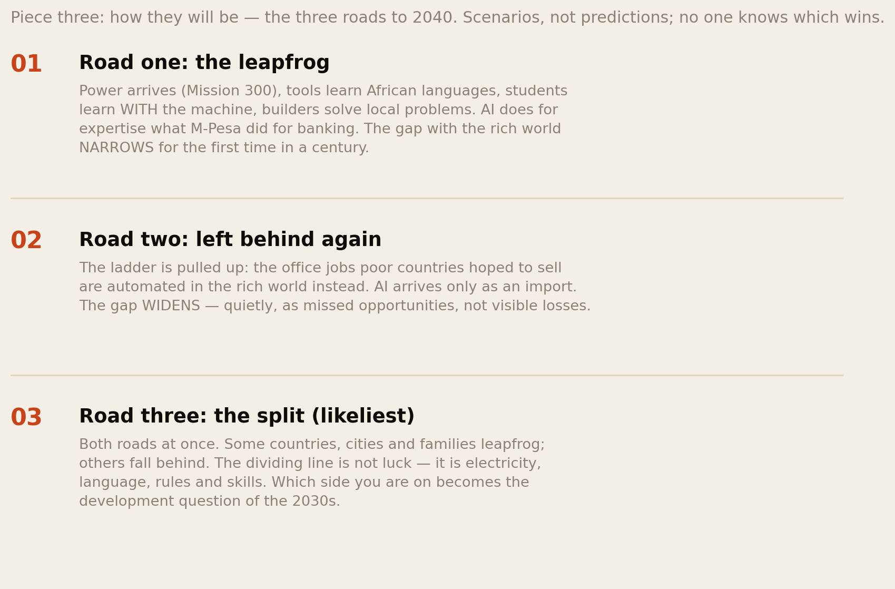
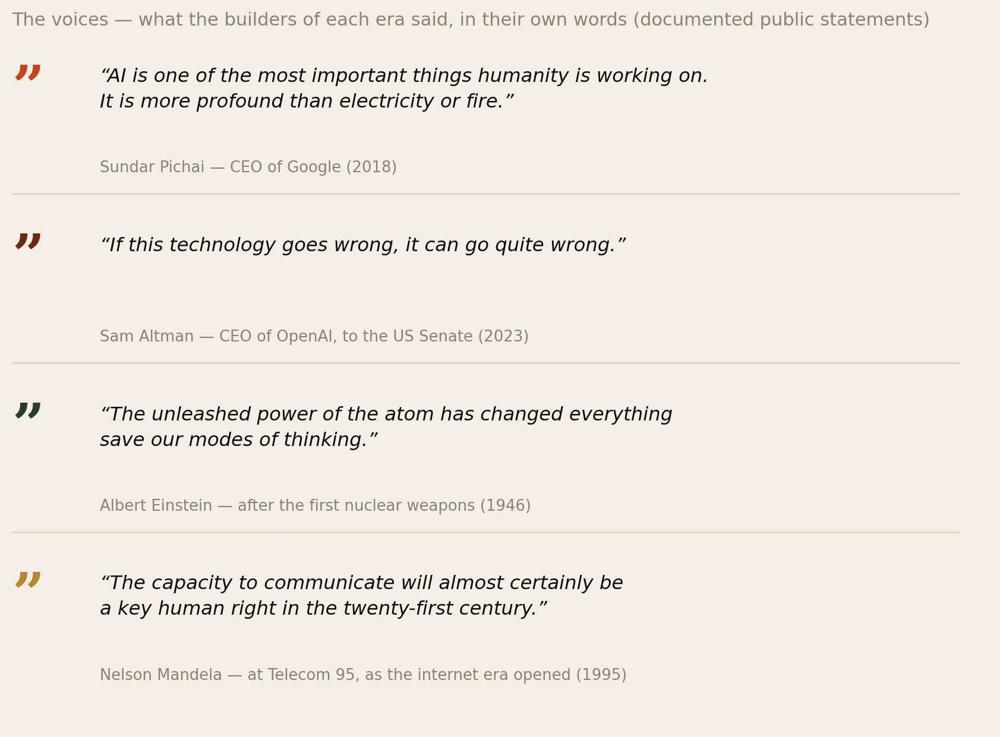
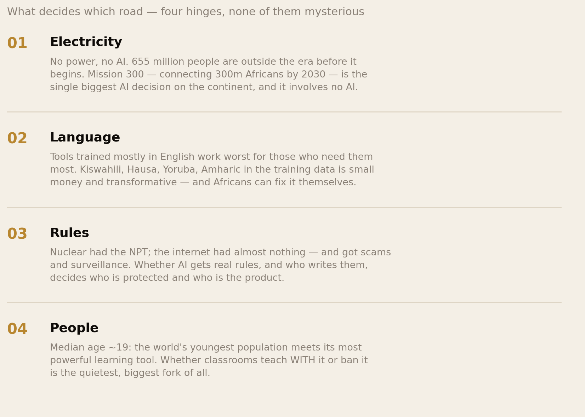

The Third Fire.
This report is written for everyone — your parents, your teenage cousin, the friend who has never opened an AI app. It tells one story in three pieces: how the developing world was before AI arrived, how it is in the era’s first four years, and how it will be on the three roads ahead. And because the future is easier to see through the past, it starts with the two great teachers: the atom, which gave the world 9% of its electricity and twelve thousand warheads — and the internet, which grew from 39 million users to six billion and delivered both M-Pesa and the scam economy. Every powerful tool arrives with two hands. This is the story of the newest one, told simply, with the numbers — and in the words of the people who built each era.
Section 01The Short Version
First, one plain definition, so nobody is left outside this report: AI — artificial intelligence — means computer programs that can read, write, answer questions, and do office work the way a person does. Since late 2022, these programs became good enough for anyone to use, free, on an ordinary phone. That is the whole technical background you need. Now the five findings:
- History has seen this movie before — twice, recently. Nuclear science produced clean electricity for 31 countries and the two bombs of 1945; the internet grew from 39 million users to six billion, delivering M-Pesa and free knowledge and scams and misinformation. Powerful technologies do not choose between good and bad. They do both, at the same time, and people decide the mix. AI will be no different.
- How they were: before AI, the developing world was not a comfortable place being disrupted — it was a waiting world: 847 million people below the $3.00-a-day line, 85% of African work informal, 655 million without electricity, and 10–12 million young Africans chasing ~3 million formal jobs a year. AI arrived at a queue, not a paradise.
- How they are: four years in, the era is real but early. AI can touch 34% of jobs in rich countries and 11% in poor ones — but even in rich countries only a fifth of companies actually use it yet. In the developing world both hands are already visible: a Nigerian experiment gave children six weeks of AI tutoring and produced some of the biggest cheap learning gains ever measured — while the office-job ladder poor countries hoped to climb (call centres, back offices) is being sawn off by the same machine.
- How they will be: three roads to 2040. The leapfrog — AI does for expertise what M-Pesa did for banking, and the gap narrows. Left behind again — AI arrives only as an import, and the gap widens quietly. The split — likeliest — both at once, with electricity, language, rules and skills deciding who lands where. No expert on earth knows which road wins. Anyone who claims to is selling something.
- The deciding factors are not mysterious — and none of them is AI. Power to the 655 million. African languages in the tools. Rules written before the harms scale, not after. And classrooms that teach with the machine instead of banning it. Four hinges, all human choices.
Fire cooked our food and burned our villages. The atom lit cities and flattened two. The internet gave Kenya M-Pesa and gave the world the scam call. Now comes the third fire — and the only question that matters is the old one: whose hands, and which hand?
Section 02Every Tool Has Two Hands

Start with the oldest technology story we have. Fire cooked food, warmed homes and lit the dark — and burned villages and armed wars. Nobody concluded fire was good or bad; every family learned to keep it in the hearth and away from the roof. The printing press filled the world with books — and with propaganda; the same machine printed Bibles and the pamphlets of religious wars. This is not a coincidence that keeps repeating. It is a law: a technology is powerful precisely because it amplifies what people do — and people do both kinds of things.
Why does this matter for a report about computers? Because the loudest voices about AI today are shouting one of two things: “it will save us” or “it will destroy us.” History’s answer to both is the same: yes. Both, at once, in proportions that are not yet decided — and that different countries, and different families, will experience differently. The two most recent powerful technologies show exactly how that works, and the developing world lived through both. So before the three pieces of our own story, two short lessons.
Section 03Lesson One: The Atom

In the 1940s, scientists learned to split the atom. Within a decade the same knowledge had produced two opposite things. The first: bombs that killed over a hundred thousand people in Hiroshima and Nagasaki in two mornings — and an arms race that still leaves roughly 12,000 warheads standing today. The second: power stations. Today 416 nuclear reactors in 31 countries quietly generate about 9% of the world’s electricity — lighting hospitals, powering trains, treating cancer with the same radiation that can kill. Nobody “chose” between these futures. The science did both. What varied is what people built with it — and the world, to its credit, noticed early: US President Eisenhower stood before the United Nations in 1953 with his “Atoms for Peace” speech, and the treaties that followed (imperfect, often unfair, but real) kept the weapon count at nine countries while the electricity spread to thirty-one.
Two lessons travel from the atom to AI. First: rules written early matter. The nuclear age got its treaties because the danger was so visible — a mushroom cloud photographs well. AI’s harms are quieter (a job unfilled, a lie believed, a teenager’s mind shaped), which makes early rules harder to demand and easier to skip. Second, and closer to home: the developing world got the short end of both futures. Only one African country (South Africa) generates nuclear power; most of the continent received neither the electricity nor a seat at the rule-writing table. When people say “Africa must be in the room where AI rules are written,” the atom is the receipt for what happens when it is not.
Section 04Lesson Two: The Internet

The second teacher is the one everyone reading this lived through. In 1995 the internet had 39 million users — less than 1% of humanity, almost none of them in Africa. Today it has around six billion — 74% of every person alive. No tool ever spread faster. And here is the part the Silicon Valley histories skip: the internet’s most celebrated financial invention happened in Nairobi. M-Pesa — sending money by phone, no bank account needed — launched in 2007 for people the banking system had ignored, and today mobile money moves more than half of Kenya’s GDP, with M-Pesa alone serving over 34 million users. The developing world did not just receive the internet. It did something with it the rich world had not imagined — because it aimed the tool at its own problems. Remember that sentence; it is this whole report’s best argument about AI.
And the other hand arrived in the same envelope. The same phone that carries the school fees carries the con artist’s call. The same networks that reunited families across oceans carry the rumours that fuel elections and mobs. The same platforms that taught millions for free were engineered to be un-put-downable, and a generation’s attention was the price. Nobody voted on any of this; it simply arrived, and everyone adapted. The internet’s lesson for the AI era is therefore double: the developing world can win big with a new tool — bigger than the inventors imagined — and the bad arrives bundled with the good, on the same device, in the same year. Preparation beats surprise. That is why this report exists.
Section 05Piece One: How They Were

Now our own story, in three pieces. Piece one: the world as it was on the eve of the AI era — because you cannot judge what a technology changes without knowing what it found. It found a developing world that was working — nearly everyone works — but waiting. 847 million people lived below the World Bank’s $3.00-a-day line, nearly half of Sub-Saharan Africa among them. 85.3% of African work was informal: farms, market stalls, workshops, boda bodas — real work, but without contracts, pensions or protection. The formal job — the office, the payslip, the ladder — was the scarce prize: 10 to 12 million young Africans entered the job market every year, and the continent produced roughly 3 million formal jobs for them. Four chasing every one, before any computer learned to write.
It found classrooms with too few teachers, clinics with too few doctors, and 655 million people — more than 560 million of them African — without electricity. And it found the world’s youngest population: a median age around nineteen, meaning half the continent was younger than the internet itself. Hold both facts together, because every road in Piece Three runs between them: a world short of everything except young people. That is what AI arrived into. Not a comfortable world about to be disrupted — a waiting world, wondering if this tool, finally, was the one that would be aimed at its problems.
Section 06Piece Two: How They Are

Piece two: where things actually stand, four years in — and the honest answer is earlier than the noise suggests, and both hands already visible. The reach is uneven by design: the UN’s labour agency measured that AI can touch about 34% of jobs in rich countries but only 11% in poor ones — because AI does office work, and most developing-world work is not office work. The farmer, the trader and the mason are safe from the machine (and untouched by its gains). And even where AI can reach, most businesses have not picked it up: only about one in five firms in the rich world actually used AI in 2025. The era has begun; the race has not been run.
The good hand is already measurable. In Nigeria, a randomized experiment (the gold standard of testing — like a medical trial) gave schoolchildren six weeks of after-school tutoring with an AI assistant, supervised by teachers, and produced learning gains among the largest ever measured for a cheap program. In Kenya and across the continent, a new value chain is running: from data-labelling piecework at around $2 an hour (hard, poorly paid — and a first rung) up to structured remote AI work paying $1,000–2,000 a month — salaries that were simply unavailable locally before. Farmers ask crop questions by chatbot in Kiswahili; nurses use AI triage helpers; students everywhere quietly study with it.
The bad hand is measurable too. The office-job ladder poor countries planned to climb — call centres, data entry, back offices, the path that lifted India and the Philippines — is being sawn off: about a million Philippine call-centre jobs are rated at risk by 2030, and the first jobs AI takes everywhere are exactly the clerk-and-assistant roles that were the developing world’s classic first formal jobs. Scam messages are now written fluently by machine; deepfake fraud has exploded; and a careful Kenyan experiment that gave small businesses AI advice found no average improvement — the weakest businesses actually did worse, because fluent advice is not capital. Both hands, already at work, in the same countries, in the same year. Exactly as the internet taught us to expect.
Section 07Piece Three: How They Will Be

Piece three: the future — handled with the honesty it deserves. Nobody knows. What serious people can do is describe the roads. Road one: the leapfrog. Remember the M-Pesa sentence: the developing world aimed the internet at its own problems and produced something the inventors never imagined. AI is even better suited to a repeat, because its scarcest ingredient is not factories or cables — it is expertise, and expertise is exactly what the developing world has always been short of. On this road, power arrives (the Mission 300 project aims to connect 300 million Africans by 2030), the tools learn African languages, classrooms teach with the machine, and a continent whose median age is nineteen adopts the tool fastest. The tutor, the doctor’s assistant and the crop advisor reach every pocket at almost no cost — and for the first time in a century, the gap with the rich world narrows.
Road two: left behind again. On this road the pattern of the atom repeats instead: the technology’s benefits concentrate where the power stations, the computers and the rule-writers already are. The office jobs poor countries hoped to sell abroad are automated in the rich world instead; AI arrives only as an import, paid for in dollars; the tools never learn the languages; and the cost is mostly invisible — not mass firings but opportunities that quietly never arrive, which is the cruellest kind of loss because nobody protests a job that was never created.
Road three: the split — and it is the likeliest. Both roads at once. Kenya leapfrogs in one sector while a neighbour stalls; Nairobi wins while a rural county waits for power; the family that learns the tools pulls ahead of the family that fears them. The dividing line will not be luck. It will be the four hinges of Section 11 — electricity, language, rules, skills — and they are all, without exception, human decisions. Which is the most hopeful sentence in this report, if you read it slowly.
Section 08The Bright Side, Counted
Optimism deserves numbers, not vibes. Here is the bright hand, counted:
- The teacher that never leaves. The Nigerian trial’s six-week gain; and globally, a tutor for every child was always the one reform no budget could afford. It now costs approximately nothing. The same for a first-opinion health assistant, a legal explainer, a crop advisor.
- The precedent with receipts. M-Pesa: 34+ million users, more than half of Kenya’s GDP flowing through mobile money — built where experts said it could not be. The playbook — aim the tool at local problems — is proven, local, and repeatable.
- Work that ignores borders. The $1,000–2,000-a-month remote AI roles reachable from Nairobi or Kigali — incomes that once required a visa now require a connection. Our Leapfrog Test report maps this ladder rung by rung.
- Help that makes the helper stronger. The best workplace study so far (a customer-service experiment published in a top economics journal) found AI made workers 15% more productive — with the biggest gains going to the newest, least-experienced workers. Read that twice: the tool helped the bottom most. That is the opposite of how most technologies have worked.
- The demographic jackpot. The youngest population on earth meets the most powerful learning tool ever built, while the rich world ages out of exactly such people. No other region holds this card.
Section 09The Dark Side, Counted
And the shadow, counted with the same discipline:
- The ladder, sawn. ~1 million Philippine BPO roles rated at risk by 2030; young workers in AI-exposed jobs measurably behind their peers in the US; the entry-level office job — the developing world’s classic first formal rung — is the first thing the machine does cheaply. Our New Ladder report carries the full evidence.
- Lies at industrial quality. Deepfake scams up over 1300% in recent counts; the con artist now writes perfect English (and soon perfect Kiswahili); election rumours arrive with video. Societies with young institutions and low trust have the least immune system for this.
- Rented rails. The models, chips and clouds are owned elsewhere and priced in dollars. A leapfrog on rented rails can be re-priced, restricted, or switched off by decisions made in other countries’ boardrooms — a dependency the atom never created because uranium, at least, was sometimes African.
- The gains stack where the advantages already are. The Kenyan business-advice trial (no average gain; weakest firms −10%) and the IMF’s “intelligence divide” warning point the same way: without deliberate effort, AI widens gaps — between firms, families and countries — before it closes any.
- The invisible cost. Road two’s signature harm is not a firing; it is the BPO park never built, the graduate scheme never opened, the industry that migrated to machines before it could migrate to Africa. No headline will ever report it. This report exists partly so somebody counts it.
Section 10What the Builders Said

Listen to how the people closest to each fire described it. Andrew Ng, the Stanford scientist who taught a generation of AI engineers, put the promise plainly in 2017: “AI is the new electricity” — meaning it will soak into everything, the way power did, until nobody calls it technology anymore. Sundar Pichai, the CEO of Google, went further: AI is “more profound than electricity or fire.” These are not marketing lines; they are why trillions are being spent. But listen also to the same industry’s other hand. Sam Altman, whose company built ChatGPT, told the US Senate under oath: “If this technology goes wrong, it can go quite wrong.” Geoffrey Hinton — often called the godfather of AI, who spent fifty years building it — left Google in 2023 to be free to warn: “It is hard to see how you can prevent the bad actors from using it for bad things.” When the builders themselves speak in both voices, believe both voices.
And the older eras left us their words too. Albert Einstein, whose physics opened the atomic door, wrote in 1946: “The unleashed power of the atom has changed everything save our modes of thinking” — the tools change faster than the wisdom, which is the whole danger in one sentence. And Nelson Mandela, speaking in 1995 as the internet era opened, saw the stakes for our part of the world before almost anyone: “The capacity to communicate will almost certainly be a key human right in the twenty-first century.” Swap “communicate” for “compute,” and Madiba’s sentence is the AI-era argument this report has been making all along: access to the new tool is not a luxury debate. It is a justice debate.
Section 11What Decides Which Road

If the three roads are real, what decides the exit taken? Four things — and notice that none of them is about AI itself. Electricity: no power, no era; 655 million people are locked out before the story starts, which is why Mission 300 — a dam-and-grid project, no algorithms involved — is the most important AI decision on the continent. Language: tools trained on English work worst for the people who need them most; putting Kiswahili, Hausa, Yoruba and Amharic into the machines is cheap by global standards and is the one hinge Africans can turn without anyone’s permission. Rules: the atom got treaties because its danger photographed well; the internet got almost none and delivered the scam economy; whether AI gets real rules — on fraud, on children, on data — and who sits at the table writing them decides who is protected and who is the product. People: the median African is nineteen years old and meets the most powerful learning tool ever built this decade; whether schools teach with it (as Nigeria’s trial did, with teachers supervising) or simply ban it is the quietest hinge and possibly the biggest. Four hinges. All human. All being set right now.
Section 12What You Can Do — No Technical Degree Required
A report for everyone should end with things everyone can do. None of these requires money or a computer-science course:
- Touch the tool this week. The free AI apps work in a browser on an ordinary phone. Ask one real questions for ten minutes — a letter, a farm problem, a school topic. Fear of AI is mostly fear of the unknown, and ten minutes converts it into judgement.
- Teach the family both hands. The same rule we learned for M-Pesa and the con artist: wonderful tool, and never trust a voice, video or message just because it sounds real. Agree a family code word for money requests. This one habit defeats most AI-era fraud.
- Let the children use it — supervised. The evidence is now clear: AI tutoring with an adult involved produced remarkable gains; unsupervised leaning on it weakened learning. The rule is the same as for fire: with the child, not instead of the child.
- Verify before you share. The scam economy and the rumour economy both run on forwarding. The five-second pause — who says this, and how do they know? — is a civic act now.
- If you are choosing studies or work, this library has your specific map: the university decision at home, the study-abroad decision, and the jobs evidence in full.
- And if you hold any influence at all — a classroom, a chama, a company, a pulpit, a WhatsApp group — spend it on the four hinges: power, language, rules, skills. The roads are still open. That is the point of telling the story now.
Section 13The Uncomfortable Part
Four honesty notes. First, analogies teach, but they can also mislead. AI is like the atom and the internet in its double-handedness — but unlike them it improves itself yearly, spreads at zero cost, and speaks. Where the analogy breaks, this report’s history lessons are a floor for thinking, not a ceiling.
Second, the future sections are scenarios, not forecasts. We assigned no probabilities because none can be defended. Our own AI-series reports are flagged for revisit by mid-2027; a reader in 2030 should expect parts of Piece Three to look naive — we just cannot know which parts.
Third, this report was made with the technology it describes — drafted, charted and fact-checked with AI assistance under human editorial control. We think that is honest practice, disclosed here and in Section 14; a reader who finds it circular is owed the acknowledgement.
Fourth, the calm tone is itself a choice. Some serious people believe AI risk deserves alarm, not balance; others believe the harms talk is overblown and the poor mainly risk being left out of the benefits. We have tried to let the verified numbers set the temperature. Where the numbers run out, we said so — and stopped.
Section 14Method & Limits
How this report was built, and where it can break:
- Nuclear figures: World Nuclear Association and IAEA (about 9% of world electricity; 416 reactors in 31 countries); warhead estimates (~12,000) from the Federation of American Scientists’ published counts; nine nuclear-armed states per standard references. South Africa (Koeberg) as the continent’s only nuclear-power operator.
- Internet figures: 39.2M users in 1995 and ~6 billion (74%) in 2025 from ITU-based compilations; Africa-region use 36% (ITU 2025). Mobile money: Central Bank of Kenya (agents transacted over half of Kenya’s GDP in 2024) and operator data (M-Pesa 34M+ active users); we say “more than half of GDP flows through” — a transaction measure, not a share of value created.
- Developing-world baseline and AI-era numbers are carried from our verified companion reports — poverty (847M, $3.00/day 2021 PPP, World Bank March 2026 update), informality (85.3%, ILO), electricity (655M, SDG7 2026), jobs arithmetic (AfDB), exposure (ILO 34%/11%), adoption (OECD 20.2%), the Nigerian tutoring RCT (~+0.3 SD, supervised), the QJE support-agent experiment (+15%, largest gains to the least experienced), the Kenyan GPT-4 business-advice RCT (null average, ~−10% weakest), Philippine BPO risk (~1M by 2030, officially debated), the annotation-to-remote-work wage range (journalistic), and the deepfake-fraud growth figure (industry-reported) — each sourced in full in The Leapfrog Test, The New Ladder and The Algorithm at the Border.
- Quotes are documented public statements: Pichai (2018 interview remarks, widely reported); Ng (2017 Stanford talk); Altman (US Senate testimony, May 2023); Hinton (New York Times interview, May 2023); Einstein (1946 fundraising telegram, as published); Eisenhower (“Atoms for Peace,” UN General Assembly, December 1953); Mandela (Telecom 95 address, Geneva, October 1995). Quotes are reproduced in their commonly documented form; dates given in text.
- Simplifications: this report deliberately trades precision for readability — “AI” here means generative AI tools of the 2022–2026 wave; “the developing world” compresses enormously different countries; the three roads compress a continuum. The companion reports carry the uncompressed versions.
- Futures flag: Sections 07–09 and 11–12 contain scenarios and judgement, not measurement. Flagged for revisit by mid-2027 with the rest of the AI series.
- AI use in production: drafted, charted and fact-checked with AI assistance under editorial control — the same tools this report describes. Every load-bearing number was verified against the primary source; the interpretation, emphasis and errors are ours.
Principal sources: World Nuclear Association and IAEA; Federation of American Scientists; ITU Facts and Figures; Central Bank of Kenya; World Bank Poverty and Inequality Platform and World Development Report 2026; ILO; OECD; African Development Bank; SDG7 tracking (IEA and partners); the Nigerian and Kenyan randomized evaluations and the QJE workplace experiment; documented public statements as listed above.
Companion reports: this is the series overview — the panorama the other four panels detail: The Algorithm at the Border (the journey), The New Ladder (the jobs), The Leapfrog Test (the home front), and Before You Board (the student’s handbook). Start anywhere; they were written to be read in any order.
The full report is also available as a PDF edition — written to be shared with the whole family, including the members who have never opened an AI app. Especially them.
Africa Global Forum · Research · 2026